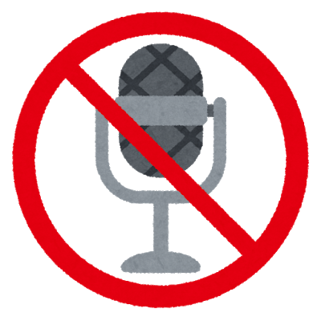

鳥クイズ
あなたのID:
ルームID:
受信した情報はコンソールログで確認してください
【ルール説明】「分かった！」って話しかけてみて！
スマホで赤い球を動かして、①～⑥のボックスに重ねてみよう。
中央に鳥の写真が出てきて、その鳥の鳴き声が聞こえるよ。
鳥の名前がわかったら、マイクの画像をクリックして、「分かった！」って言ってみてね。
答え方のヒント
「他に分かった問題はある？」→あったら「〇番」って答えてね
「他に分かった問題はある？」→無かったら「ない」って答えてね

答えを見る